One place for every key,
with a way back
Un solo lugar para todas las claves,
con un camino de regreso
How to secure and control the credentials of websites, social networks, hosting and AI services with a self-hosted vault, a second factor, an encrypted off-site copy, a standby that switches on only in an emergency and a view-only emergency contact.
Cómo asegurar y controlar las credenciales de sitios web, redes sociales, hosting y servicios de IA con una bóveda propia, segundo factor, una copia cifrada fuera de sitio, un respaldo que se enciende sólo en una emergencia y un contacto de emergencia de sólo lectura.
Why this project
Por qué este proyecto
Many projects mean many keys. This design secures and controls all of them in one place: paper for the few keys that open everything, a password manager for the many you use daily.
Muchos proyectos son muchas claves. Este diseño las asegura y controla todas en un solo lugar: papel para las pocas claves que abren todo, un gestor de contraseñas para las muchas que se usan a diario.
Root secrets
Secretos raíz
Master password, recovery codes, backup passphrase: on paper, offline, in separate places.
Contraseña maestra, códigos de recuperación, frase del backup: en papel, offline, en lugares separados.
Daily credentials
Credenciales diarias
Generated, unique and autofilled by the manager. Browsers do not remember passwords.
Generadas, únicas y autocompletadas por el gestor. Los navegadores no recuerdan contraseñas.
Machine secrets
Secretos de máquina
API keys and tokens in the manager, with small scope, spending caps and a rotation date.
Claves de API y tokens en el gestor, con poco alcance, topes de gasto y fecha de rotación.
How it is built
Cómo está construido
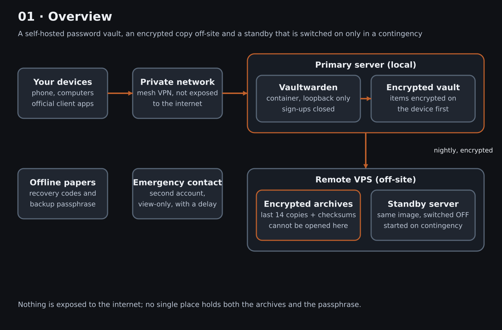
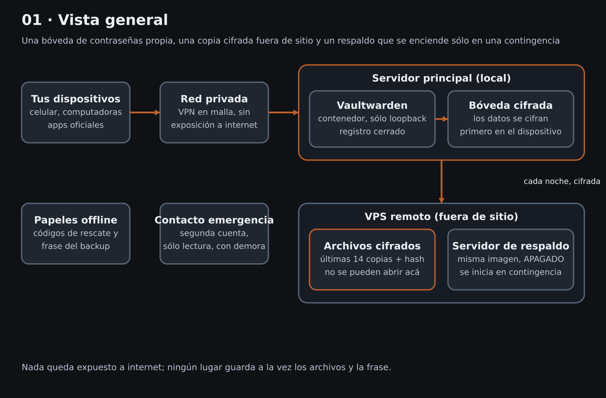
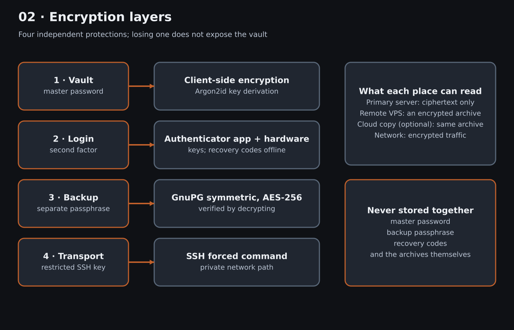
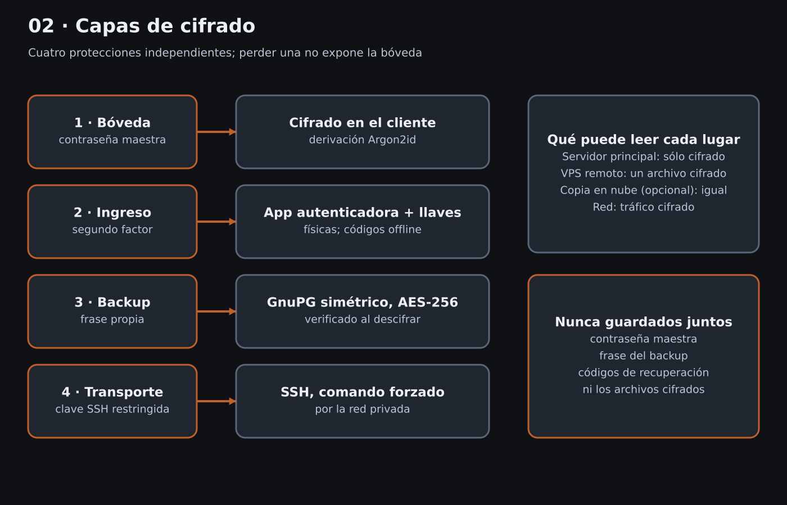
Backup and contingency
Backup y contingencia
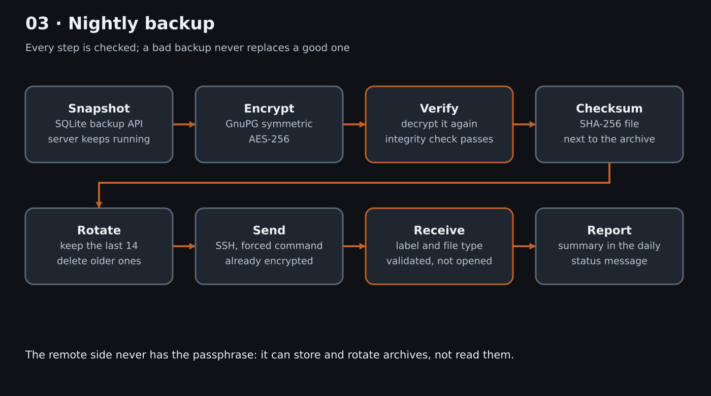
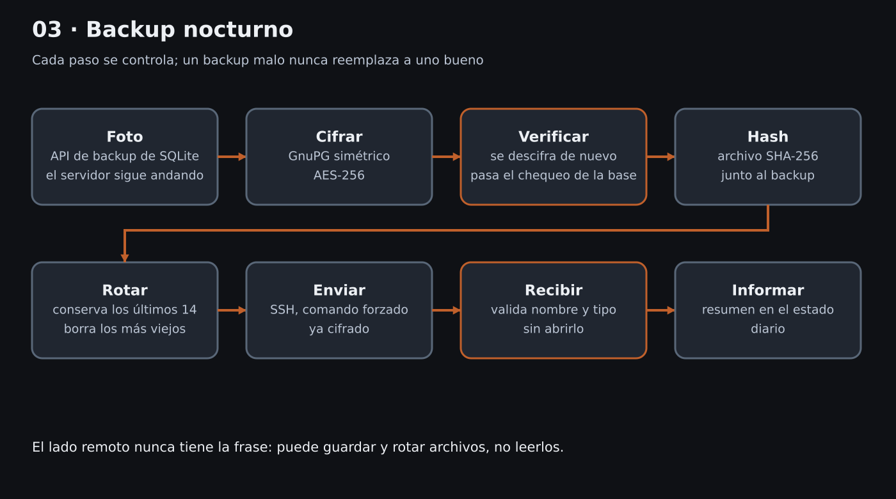
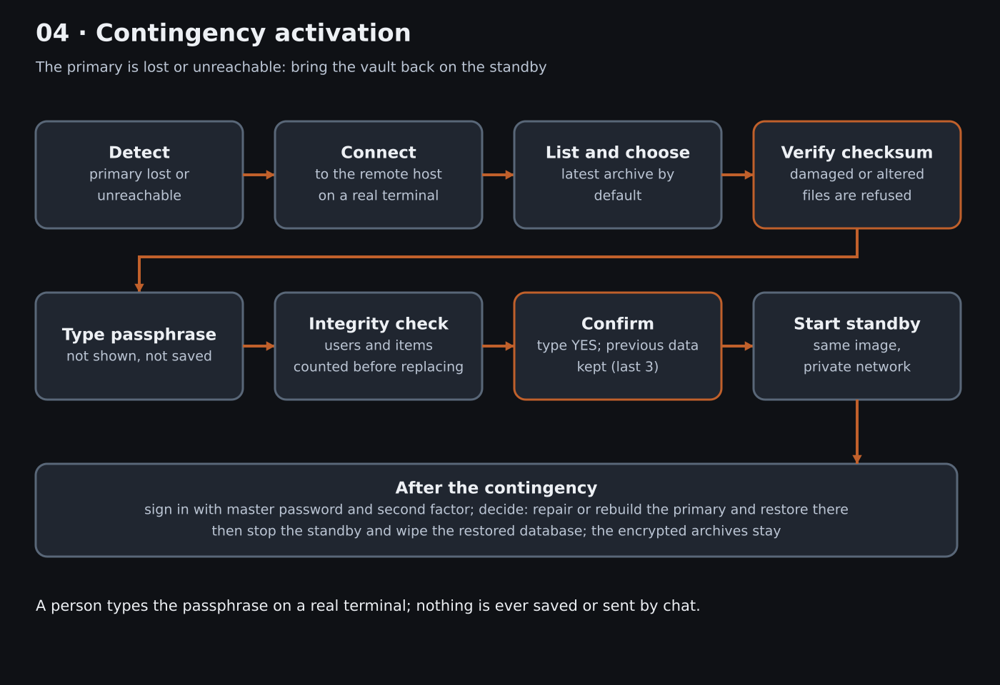
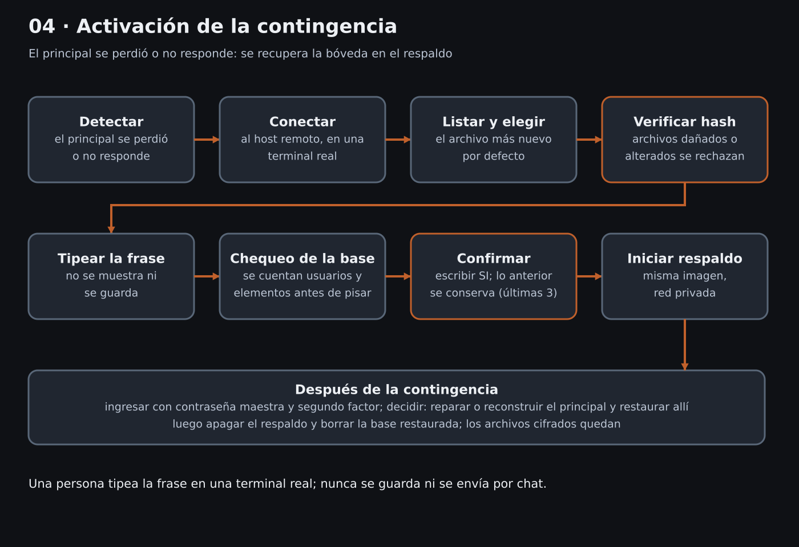
The server and the standby can be a physical machine, a virtual machine or a VPS. The encrypted copy can also go to a cloud drive, object storage, an external disk or a NAS: always encrypted before it leaves, with the passphrase kept apart on paper. Read the options.
El servidor y el standby pueden ser un equipo físico, una máquina virtual o un VPS. La copia cifrada también puede ir a un drive en la nube, almacenamiento de objetos, un disco externo o un NAS: siempre cifrada antes de salir y con la frase de paso aparte, en papel. Ver las opciones.
Keys and emergency access
Claves y acceso de emergencia
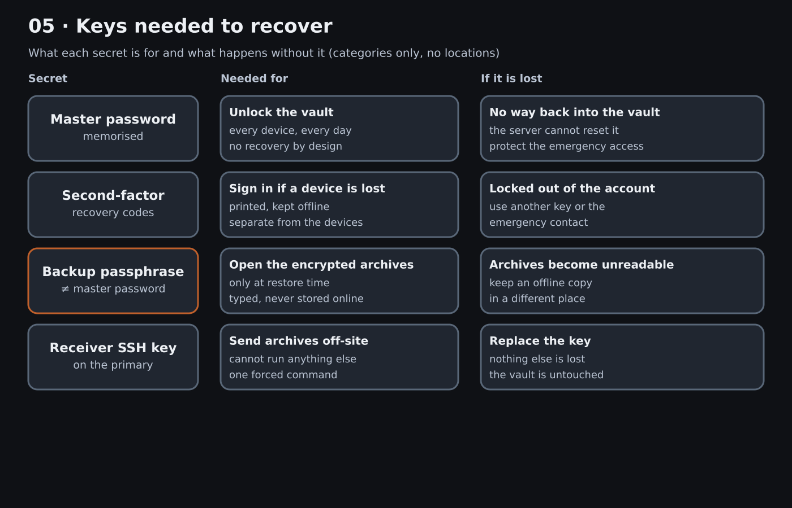
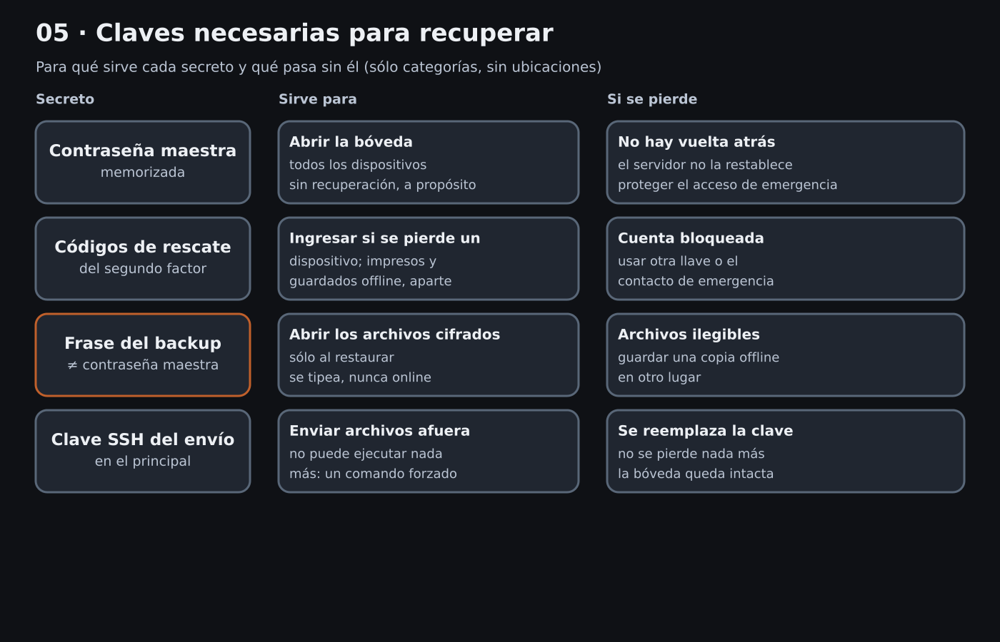
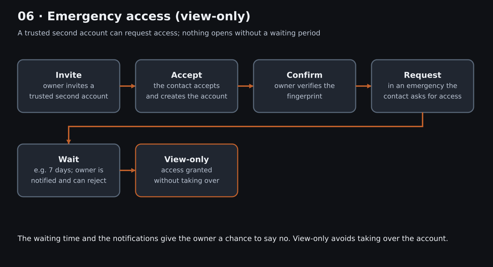
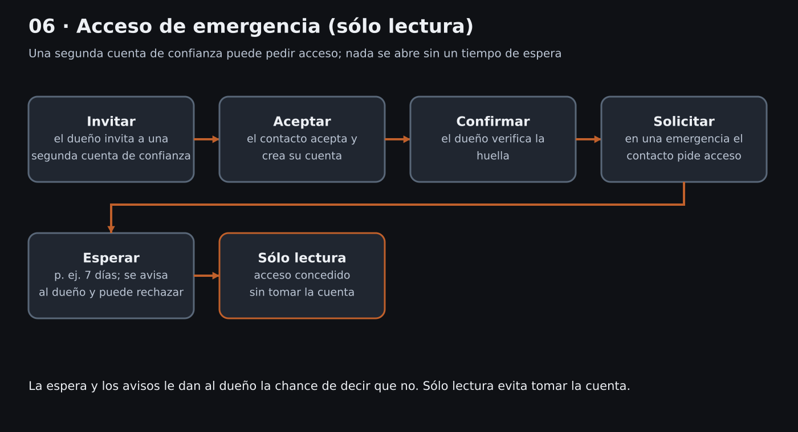
Security recommendations
Recomendaciones de seguridad
Accounts
Cuentas
Long memorised master password, Argon2id raised, authenticator app plus two hardware keys.
Contraseña maestra larga y memorizada, Argon2id elevado, app autenticadora más dos llaves físicas.
Server
Servidor
Sign-ups closed, admin page off, loopback only behind a private network, image pinned.
Registro cerrado, administración apagada, sólo loopback tras una red privada, imagen anclada.
Backups
Backups
Encrypted with their own passphrase, verified, rotated; a restore rehearsal every quarter.
Cifrados con su propia frase, verificados y rotados; un ensayo de restauración cada trimestre.
Habits
Hábitos
No secrets in chat, notes, repositories or assistants; owner and operator accounts separated.
Ningún secreto en chats, notas, repositorios ni asistentes; cuentas propietarias y de operación separadas.